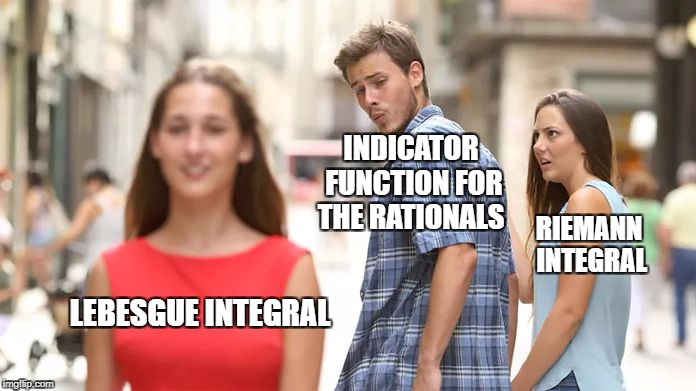

Section 3
Last Updated: 30 Sept 2023
Date: 29 Sept 2023
Introduction
In this section, we will discuss:
- Order Statistics
- Renyi Representation
Order Statistics
Definition 1 The order statistics of r.v.s \(Y_1, \cdots, Y_n\) are the sorted list of the \(Y_j\), denoted by \(Y_{(1)}, \leq Y{(2)} \leq \cdots Y{(n)}\). For example, \[Y{(1)} =\min(Y_1,\cdots, Y_n), Y{(n)}=\max(Y_1,\cdots, Y_n)\] and for \(n\) odd \(Y_{((n+1)/2)}\) is the median of \(Y_1,\cdots, Y_n\).
Theorem 1 Let \(Y_1 = X_1/\lambda_1\) and \(Y_2 = X_2/\lambda_2\) be independent (scaled) Exponentials, with \(X_1,X_2 \sim\)Expo and \(\lambda_1, \lambda_2 >0\) constants. Define \[W\equiv\min(Y_1, Y_2) \text{ and } B_0\equiv I_{Y_1<Y_2}\] where \(I_A\) is the indicator random variable for an event \(A\). Then \(W \perp\!\!\!\perp B_0\).
Theorem 2 Let \(0<p<1\) be a constant and \(U\sim\)Unif. Define \[B\equiv I_{U\leq p} \text{ and } M\equiv \min(\frac{U}{p}, \frac{1-U}{1-p})\]. Then, the indicator r.v \(B\sim\) Bern\((p)\) is independent of \(M \sim \text{ Unif}\).
Renyi Representation
Theorem 3 For \(Y_1,\cdots Y_n\) i.i.d Expo, the order statistics \((Y_{(1)},\cdots, Y_{(n)})\) can be jointly represented as \[Y_{(k)}\sim \sum_{j=1}^k \frac{1}{n-j+1} X_j\], where the \(X_j\)’s are also i.i.d Exponentials.
Theorem 4 Let \(U_1, \cdots U_n\) be i.i.d Uniform and \[W_j =\frac{X_1+\cdots+X_j}{X_1+\cdots+X_{n+1}}\] with \(X_1,\cdots X_{n+1}\) i.i.d Expo. Then we have the following joint representation for the order statistics of the \(U_j\): \[(U_{(1)}, \cdots U_{(n)}) \sim (W_1, \cdots, W_n).\]
Section Discussion Questions
✏️ Section Problem 1
There is a restaurant with only one seat, and between 1pm to 3pm inclusive, exactly two people want to eat there. They each arrive at the restaurant on a uniform time between 1pm and 3pm inclusive. If the seat is empty, they take the seat and eat for the next 20 minutes. Otherwise, they leave out out of frustration. What is the probability that both people get to enjoy their 20 minute meal?
Scale the problem so that the two restaurateurs arrive on [0, 1]. Then, the problem basically asks for P(U_(1) + 1/6 < U_(2)), where U_1 and U_2 are iid Unif. By the resny representation, if we have X_1,…,X_3 iid Expo, we want P(X_2 / (X_1 + X_2 + X_3 > 1/6), i.e. P(B > 1/6) for B following Beta(1,2). We know that B = 1 - U^{1/2} for U Unif, so substituting this in and doing easy manipulations yields the answer 25/36.
✏️ Section Problem 2
Let \(U_{1}, \cdots, U_{n-1}\) be i.i.d Unif (where \(n \geq 4\)). Use these points to break the interval \([0,1]\) into \(n\) subintervals. \[[0, U_{(1)}], [U_{(1)}, U_{(2)}], \cdots, [U_{(n-1)}, U_{(n-1)}], [U_{(n-1)}, 1]\]
Let \(L_j\) be the length of the \(j\)th subinterval from the above list, and \(R=L_3/L_2\)
Find a function \(g\) (which takes on a very simple from rather than looking messy), such that \(R\sim g(U_1)\)
Find \(E(R)\) if it is finite; otherwise, show that it is infinite.
Find \(E(\sqrt{R})\) if it is finite; otherwise, show that it is infinite.
Find the distribution of the difference in length between the longest of these subintervals and the second longest of these subintervals.
Let \(X_1, \ldots, X_n\) be i.i.d. Expo, and \(T=X_1+\cdots+X_n\). By the representation for the Uniform order statistics, \[ U_{(j)} \sim \frac{X_1+\cdots+X_j}{T}, \] where this is a representation for the joint distribution of \(\left(U_{(1)}, \ldots, U_{(n-1)}\right)\). Then \[ R=\frac{U_{(3)}-U_{(2)}}{U_{(2)}-U_{(1)}} \sim \frac{X_3}{X_2} . \]
We have \[ R \sim \frac{X_3}{X_2}=\frac{X_3 /\left(X_2+X_3\right)}{X_2 /\left(X_2+X_3\right)} \sim \frac{U}{1-U} \] where \(U \sim\) Unif.
The expectation of \(R\) is infinite since \[ E\left(\frac{X_3}{X_2}\right)=E\left(X_3\right) E\left(\frac{1}{X_2}\right)=E\left(\frac{1}{X_2}\right)=\int_0^{\infty} x^{-1} e^{-x} d x=\infty . \] The integral diverges to \(\infty\) (which is why \(\Gamma(0)\) is undefined) since \(\int_0^1 x^{-1} e^{-x} d x\) diverges to \(\infty\), because \(\int_0^1 x^{-1} d x\) diverges to \(\infty\) and \(x^{-1} e^{-x} \geq x^{-1} e^{-1}\) for \(0<x<1\).
Using the result from the book for Gamma moments, \[ E(\sqrt{R})=E\left(X_3^{1 / 2}\right) E\left(X_2^{-1 / 2}\right)=\Gamma(1+0.5) \Gamma(1-0.5)=\frac{\pi}{2}, \] since \[ \Gamma(0.5)=\sqrt{\pi}, \Gamma(1.5)=0.5 \cdot \Gamma(0.5) . \]
The joint distribution of \(L_1, L_2, \ldots, L_n\) is the same as the joint distribution of \[ \frac{X_1}{T}, \frac{X_2}{T}, \ldots, \frac{X_n}{T} . \] Conveniently, these all have the same denominator \(T\). We need the distribution of \[ \frac{X_{(n)}-X_{(n-1)}}{T}=\frac{X_{(n)}-X_{(n-1)}}{X_{(1)}+\cdots+X_{(n)}} . \] By the Rényi representation, the desired distribution is \[ \begin{align*} \frac{\left(\frac{1}{n} Y_1+\frac{1}{n-1} Y_2+\cdots+Y_n\right)-\left(\frac{1}{n} Y_1+\frac{1}{n-1} Y_2+\cdots+\frac{1}{2} Y_{n-1}\right)}{Y_1+Y_2+\cdots+Y_n} &=\frac{Y_n}{Y_1+Y_2+\cdots+Y_n} \\ &\sim \operatorname{Beta}(1, n-1), \end{align*} \] where the \(Y_j\) are i.i.d. Expo. (For the denominator, note that the term \(\frac{1}{n-j+1} Y_j\) appears in exactly \(n-j+1\) of the representations for the individual order statistics, resulting in \(Y_j\) when all the order statistics get added up.)
✏️ Section Problem 3
- (Fun with Order Statistics) Let \(U_1, \ldots, U_n\) be i.i.d. Unif, and let \(U_{(1)} \leq U_{(2)} \leq\) \(\cdots \leq U_{(n)}\) be their order statistics. In the parts below, be sure to fully justify any claims of independence.
For \(1 \leq j<k<l<m \leq n\), find the joint distribution of \[ \frac{U_{(j)}}{U_{(k)}}, \frac{U_{(k)}}{U_{(l)}}, \frac{U_{(l)}}{U_{(m)}} . \]
Find \(\operatorname{Cov}\left(\log U_{(i)}, \log U_{(j)}\right)\) for \(1 \leq i<j \leq n\) (as a sum of simple terms).
As given in class and on the homework, we can jointly represent \[ \left(U_{(1)}, U_{(2)}, \ldots, U_{(n)}\right) \sim\left(\frac{S_1}{S_{n+1}}, \ldots, \frac{S_n}{S_{n+1}}\right), \] where \(S_j \equiv X_1+\cdots+X_j\) and \(X_1, \ldots, X_{n+1}\) are i.i.d. Expo. Then \[ \left(\frac{U_{(j)}}{U_{(k)}}, \frac{U_{(k)}}{U_{(l)}}, \frac{U_{(l)}}{U_{(m)}}\right) \sim\left(\frac{S_j}{S_k}, \frac{S_k}{S_l}, \frac{S_l}{S_m}\right) . \] So \(\frac{S_j}{S_k} \sim \operatorname{Beta}(j, k-j), \frac{S_k}{S_l} \sim \operatorname{Beta}(k, l-k), \frac{S_l}{S_m} \sim \operatorname{Beta}(l, m-l)\) by Gamma-Beta representations. By the Gamma-Beta independence result in Proposition 3.7.8, \(\frac{S_j}{S_k}, \frac{S_k}{S_l}, S_l\) are independent. Write \(S_m=S_l+T\) with \(T \equiv X_{l+1}+\cdots+X_m\) independent of \(\left(S_j, S_k, S_l\right)\). Then \(\left(T, S_l\right)\) is independent of \(\left(\frac{S_j}{S_k}, \frac{S_k}{S_l}\right)\), so \(\frac{S_j}{S_k}, \frac{S_k}{S_l}, \frac{S_l}{S_m}\) are independent.
We have \[ \operatorname{Cov}\left(\log U_{(i)}, \log U_{(j)}\right)=\operatorname{Cov}\left(-\log U_{(i)},-\log U_{(j)}\right)=\operatorname{Cov}\left(X_{(n-i+1)}, X_{(n-j+1)}\right), \] where \(X_1, \ldots, X_n\) are i.i.d. Expo (the order of the order statistics is reversed since \(-\log\) is decreasing). The Rényi representation yields the joint representation \[ \left(X_{(n-i+1)}, X_{(n-j+1)}\right) \sim\left(\sum_{k=1}^{n-i+1} \frac{1}{n-k+1} X_k, \sum_{k=1}^{n-j+1} \frac{1}{n-k+1} X_k\right) . \] So \[ \operatorname{Cov}\left(X_{(n-i+1)}, X_{(n-j+1)}\right)=\sum_{k=1}^{n-j+1} \frac{1}{(n-k+1)^2}=\sum_{k=j}^n \frac{1}{k^2} . \] Interestingly, this depends on \(j\) but the \(i\) disappeared!
✏️ Section Problem 4
Let \(X_1, X_2, \ldots, X_n\) be i.i.d. Expo. As usual, let \(X_{(1)} \leq X_{(2)} \leq \cdots \leq X_{(n)}\) be their order statistics. Let \[ T=\sum_{j=1}^n\left(X_j-X_{(1)}\right) . \] Find the distribution of \(T\). Simplify fully; you can give the name and parameters (if it is a distribution we have studied), or the PDF.
By the Rényi representation, we can represent \(\left(X_{(1)}, \ldots, X_{(n)}\right)\) jointly as \[ X_{(k)} \sim \sum_{j=1}^k \frac{1}{n-j+1} Y_j \] where the \(Y_j\) ’s are also i.i.d. Expo. Then \[ T=\sum_{k=1}^n X_k-n X_{(1)}=\sum_{k=1}^n X_{(k)}-n X_{(1)} \sim \sum_{k=1}^n Y_j-Y_1=\sum_{k=2}^n Y_j \sim \operatorname{Gamma}(n-1) \text {. } \] Method 2: Consider \(n\) independent Poisson processes, each with rate 1 . Let \(X_j\) be the time of the first arrival in the \(j\) th of these processes. Given that \(X_{(1)}=a\), one of the differences \(X_1-a, X_2-a, \ldots, X_n-a\) is 0 , and by the memoryless property the rest are i.i.d. Expo r.v.s. Thus, \[ T\left|\left(X_{(1)}=a\right) \sim \sum_{k=1}^n\left(X_k-a\right)\right|\left(X_{(1)}=a\right) \sim \operatorname{Gamma}(n-1) . \] This conditional distribution doesn’t depend on \(a\), so we also have \(T \sim \operatorname{Gamma}(n-1)\) unconditionally
✏️ Section Problem 5
Let \(U_1, \ldots, U_n\) be i.i.d. Unif, and let \(U_{(1)} \leq U_{(2)} \leq \cdots \leq U_{(n)}\) be their order statistics. Show without using calculus that for \(1 \leq i \leq j \leq n\), \[ \operatorname{Cov}\left(U_{(i)}, U_{(j)}\right)=\frac{i(n-j+1)}{(n+1)^2(n+2)} . \] Hint: Use representation and properties of covariance. Note that for r.v.s of the form \[ W_k=\frac{X_k}{X_1+\cdots+X_{n+1}}, \] the sum \(W_1+\cdots+W_{n+1}\) has variance 0 .
Let \(X_1, X_2, \ldots, X_{n+1}\) be i.i.d. Expo and \(W_k\) be as in the hint. Recall the joint representation \[ \left(U_{(1)}, U_{(2)}, \ldots, U_{(n)}\right) \sim\left(W_1, W_1+W_2, \ldots, W_1+W_2+\cdots+W_n\right) . \] By bilinearity, \[ \operatorname{Cov}\left(U_{(i)}, U_{(j)}\right)=\operatorname{Cov}\left(W_1+\cdots+W_i, W_1+\cdots+W_j\right)=i \operatorname{Var}\left(W_1\right)+i(j-1) \operatorname{Cov}\left(W_1, W_2\right) . \] By the Beta-Gamma algebra, \[ W_1 \sim \operatorname{Beta}(1, n) \] so \[ E\left(W_1\right)=\frac{1}{n+1}, \operatorname{Var}\left(W_1\right)=\frac{n}{(n+1)^2(n+2)} . \] To find \(\operatorname{Cov}\left(W_1, W_2\right)\), we will use the hint. Note that \(W_1+\cdots+W_{n+1}\) is the constant 1 , so it has variance 0 . Therefore, \[ 0=\operatorname{Var}\left(W_1+\cdots+W_{n+1}\right)=(n+1) \operatorname{Var}\left(W_1\right)+(n+1) n \operatorname{Cov}\left(W_1, W_2\right), \] which gives \[ \operatorname{Cov}\left(W_1, W_2\right)=-\frac{1}{n} \operatorname{Var}\left(W_1\right) \] Hence, \[ \operatorname{Cov}\left(U_{(i)}, U_{(j)}\right)=\left(i-\frac{i(j-1)}{n}\right) \operatorname{Var}\left(W_1\right)=\frac{i(n-j+1)}{(n+1)^2(n+2)} \].
✏️ Section Problem 6
Assume that \(U_1, \cdots, U_n \sim_{iid} \textnormal{Unif}\), and \(U_{(1)},U_{(2)},\cdots, U_{(n)}\) are order statistics.
For \(1 \leq j < k < l < m \leq n\), find the joint distribution of \(\left( \frac{U_{(j)}}{U_{(k)}}, \frac{U_{(k)}}{U_{(l)}}, \frac{U_{(l)}}{U_{(m)}}\right).\)
(Reconstructing Uniforms) Show that \[\left( \frac{U_{(1)}}{U_{(2)}}, \left(\frac{U_{(2)}}{U_{(3)}}\right)^2,\cdots. \left(\frac{U_{(n-1)}}{U_{(n)}}\right)^{n-1}, U_{(n)}^n \right)\] are i.i.d. Uniform random variables.
Find \(\mathbb{E}\left(\prod_{i=1}^{n} U^{\alpha_i}_{(i)}\right)\), where \(\alpha_i\)’s are positive.
Find \(\mathrm{Cov}\left(\log U_{(i)}, \log U_{(j)}\right)\) for \(j > i\).
What is the conditional distribution of \(U_{(i)} | U_{(j)}\) for \(j > i\)?
Does the conditional distribution \(U_{(i)}\left|U_{(j)}\right.\) change if we condition on more order statistics \(U_{(k)}\) with \(k > j\)? For example, find the conditional distribution of \(U_{(i)}| (U_{(i+1)},\cdots, U_{(n)}).\)
Let \(X_1,\ldots,X_{n+1}\) be i.i.d. Exponential r.v.s. Using the representation of Uniform order statistics, we can jointly represent \(\left( \frac{U_{(j)}}{U_{(k)}}, \frac{U_{(k)}}{U_{(l)}}, \frac{U_{(l)}}{U_{(m)}}\right)\) with $ ( , , ) $ where \(S_j = \sum_{i=1}^j X_i\) are the partial sums. Proposition 3.7.9 says that \(\left( \frac{S_j}{S_k}, \frac{S_k}{S_l},S_l \right)\) fully independent. Because \(X_i\)’s are i.i.d., we must have \[\left( \frac{S_j}{S_k}, \frac{S_k}{S_l},S_l \right) \perp\!\!\!\perp X_{l+1} + \cdots X_m = S_m - S_l .\] This implies \[ \left( \frac{S_j}{S_k}, \frac{S_k}{S_l} \right) \perp\!\!\!\perp \left( S_l, S_m - S_l\right).\] Since \(\frac{S_l}{S_m}\) is a function of \(\left( S_l, S_m - S_l\right)\), we have $ ( , ) !!!$ and since the left-hand side consists of independent random variables we must have \(\left( \frac{S_j}{S_k}, \frac{S_k}{S_l},\frac{S_l}{S_m}\right)\) fully independent by Problem 2 from HW1.
First we show that the r.v.s. are Uniform. Let \(X_i \sim_{iid} \textnormal{Expo}.\) For each \(1 \leq i \leq n-1\) we have \[ \left(\frac{U_{(i)}}{U_{(i+1)}}\right)^i = \left(\frac{X_1 + X_2 + \cdots + X_i}{X_1+\cdots+X_{i+1}} \right)^i \sim \textnormal{Beta}(i,1)^i ,\] through representation of Uniform order statistics and of Beta distribution. Because \(\textnormal{Beta}(\alpha,1) \sim \textnormal{Unif}^{1/\alpha}\) for all \(\alpha >1\) we have \(\left(\frac{U_{(i)}}{U_{(i+1)}}\right)^i \sim \textnormal{Unif}.\) To establish independence, we will use induction. It suffice to show that if \(X_i \overset{iid}{\sim} \textnormal{Expo}\) and \(S_j = \sum_{i=1}^j X_i\) denote the partial sums, then \[ \begin{equation} \left(\frac{S_1}{S_{2}}, \frac{S_2}{S_3},\cdots,\frac{S_n}{S_{n+1}}, S_{n+1}\right) \end{equation} \] is fully independent. Note that our induction is the exponential r.v.s. instead of on the order statistics. The base case \(n = 3\) is a direct consequence of part (1). For the induction step assume equation above is true for \(n = k\). Using independence of the Expo r.v.s.,we have \[ \left(\frac{S_1}{S_{2}}, \frac{S_2}{S_3},\cdots,\frac{S_k}{S_{k+1}}, S_{k+1}\right) \perp\!\!\!\perp X_{k+2}.\] Using similar arguments in part (1) we will have $ (, ,, ) !!!(S_{k+1}, X_{k+2})$ and therefore \[ \left(\frac{S_1}{S_{2}}, \frac{S_2}{S_3},\cdots,\frac{S_k}{S_{k+1}} \right) \perp\!\!\!\perp \left( \frac{S_{k+1}}{S_{k+2}}, S_{k+2} \right).\] Notice that the left and right hand sides are both fully independent by induction hypothesis and Beta-Gamma respectively. By definition of independence of r.v.s., we must have Equation above valid for \(n = k+1.\)
Let \(W_i = U_{(i)}^i \overset{iid}{\sim} \textnormal{Unif}\) by part 2). Then \(\left(W_i\right)^{\beta} \sim \textnormal{Unif}^\beta \sim \textnormal{Beta}(1/\beta, 1)\) for any \(\beta >0\), and the expectation is \(\mathbb{E}[W_i^{\beta}] = \frac{1/\beta}{1/\beta +1} = \frac{1}{1+\beta}.\) We can re-express the product as product of independent r.v.s using Part 2) because \[ \begin{align*} \prod_{i=1}^n U_{(i)}^{\alpha_i} &= U_{(1)}^{\alpha_1} \cdot U_{(2)}^{\alpha_2}\cdots U_{(n)}^{\alpha_n} \\ &= \left(\frac{U_{(1)}}{U_{(2)}}\right)^{\alpha_1}\left(\frac{U_{(2)}}{U_{(3)}}\right)^{\alpha_1 + \alpha_2} \cdots U_{(n)}^{\alpha_1+\cdots + \alpha_n}\\ &= W_1^{\alpha_1} W_2^{(\alpha_1+\alpha_2)/2} \cdots W_n^{(\alpha_1 + \ldots + \alpha_n)/n} = \prod_{i=1}^n W_i^{\beta_i} \end{align*} \] where \(\beta_i = \frac{\alpha_1 +\cdots +\alpha_i}{i}.\) The expectation is then \[ \mathbb{E}\left[\prod_{i=1}^n U_{(i)}^{\alpha_i}\right] = \prod_{i=1}^n \mathbb{E}\left[W_i^{\beta_i}\right] = \prod_{i=1}^n (1+\beta_i)^{-1}. \]
\[\begin{align*} \mathrm{Cov}\left(\log U_{(i)}, \log U_{(j)}\right) &= \mathrm{Cov}\left(-\log U_{(i)}, -\log U_{(j)}\right)\\ &= \mathrm{Cov}\left(Y_{(n-i+1)},Y_{n-j+1}\right)\\ &= \mathrm{Cov}\left( \sum_{k=1}^{n-i+1} \frac{1}{n-k+1}X_k, \sum_{k=1}^{n-j+1} \frac{1}{n-k+1} X_k\right)\\ &= \sum_{k=1}^{n-j+1} \left(\frac{1}{n-k+1}\right)^2 \mathrm{Var}(X_k)\\ &= \sum_{k=1}^{n-j+1} \left(\frac{1}{n-k+1}\right)^2 = \sum_{k=j}^n \frac{1}{k^2}. \end{align*}\]
(e)\[\begin{align*} U_{(i)}|U_{(j)} &\sim \frac{S_i}{S_{n+1}}\left| \frac{S_j}{S_{n+1}}\right.\\ &= \underbrace{\frac{S_j}{S_{n+1}}}_{\text{constant}} \cdot \frac{S_i}{S_j} \left\arrowvert \frac{S_j}{S_{n+1}}\right.\\ &= \underbrace{\frac{S_j}{S_{n+1}}}_{\text{constant}} \cdot \left( \frac{S_i}{S_j} \left\arrowvert \frac{S_j}{S_{n+1}}\right.\right)\\ &\sim \underbrace{\frac{S_j}{S_{n+1}}}_{\text{constant}} \cdot \left(\frac{U_{(i)}}{U_{(j)}} \left\arrowvert \frac{U_{j}}{U_{n}} \right.\right) \\ &\sim \underbrace{\frac{S_j}{S_{n+1}}}_{\text{constant}} \cdot \mathrm{Beta}(i,j-i). \end{align*}\]
- \[\begin{align*} U_{(i)}|\left(U_{(i+1)},\ldots,U_{(n)}\right) &\sim U_{(i+1)}\frac{U_{(i)}}{U_{(i+1)}}\left|\left(U_{(i+1)},\ldots,U_{(n)}\right)\right. \\ &= U_{(i+1)} \left(\frac{U_{(i)}}{U_{(i+1)}}|\left(U_{(i+1)},\ldots,U_{(n)}\right) \right)\\ &\sim U_{(i+1)} \left(\frac{U_{(i)}}{U_{(i+1)}}\right) \\ &\sim U_{(i+1)} \mathrm{Beta}(i,1). \end{align*}\] The independence \(\frac{U_{(i)}}{U_{(i+1)}}\perp\!\!\!\perp \left(U_{(i+1)},\cdots,U_{(n)}\right)\) is because \[ \frac{U_{(i)}}{U_{(i+1)}}\perp\!\!\!\perp \left(\frac{U_{(i+1)}}{U_{i+2}},\cdots,\frac{U_{(n-1)}}{U_{(n)}},U_{(n)}\right)\] and $ (U_{(i+1)},,U_{(n)}) $ is a function of $ (,,,U_{(n)})$.
Next Week
Next week, we will discuss:
- Lebesgue Integral
- Convergence Theorems

Feel free to upload the pencil problem you wish to be discussed next week here.
Note that a verified email address is needed in the GForm so we don’t get scammy input! :)
\(\,\)